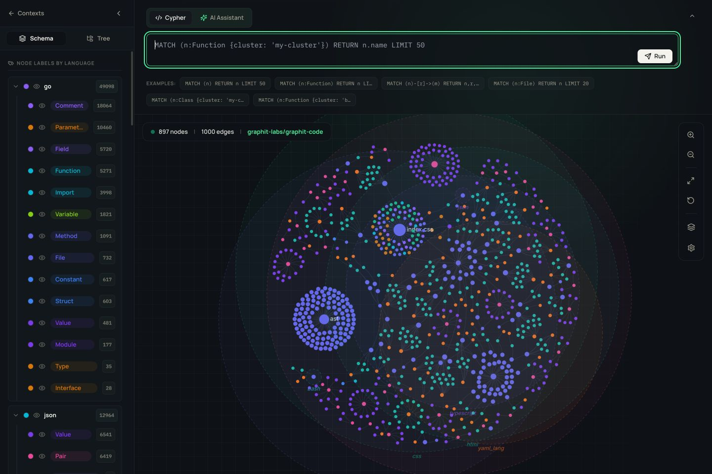
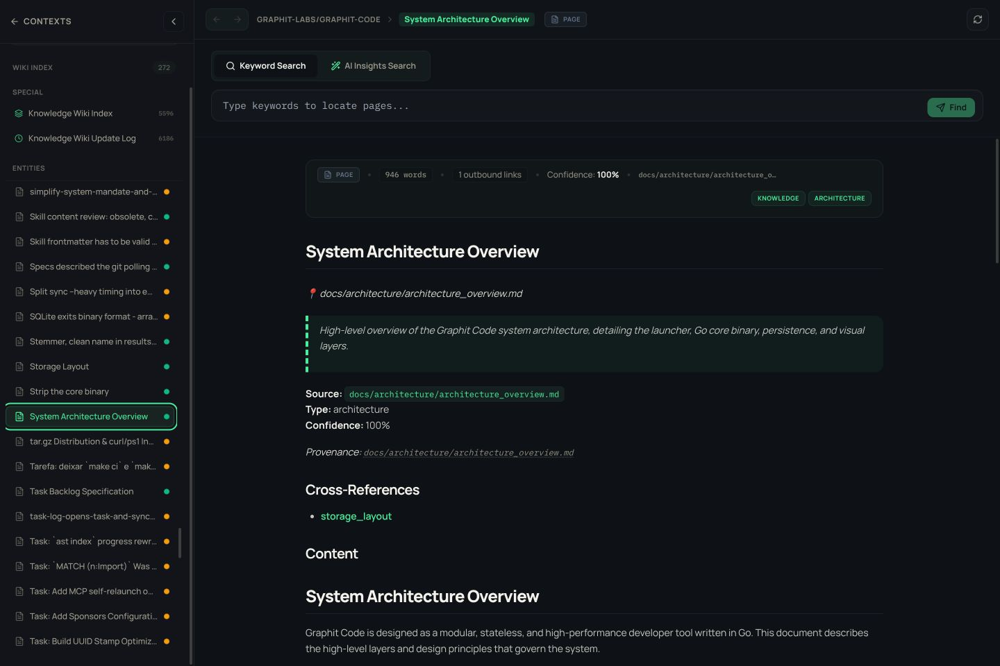
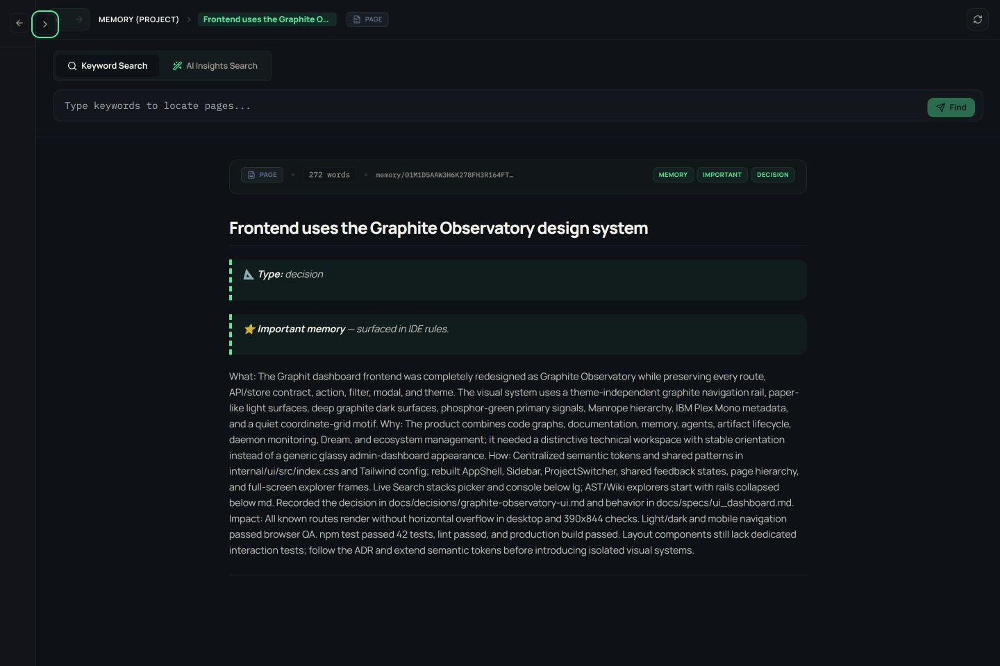

Map the code
Query symbols, callers, dependencies, imports, inheritance, complexity, and source through a structural graph.
Graphit gives every coding agent the same structural code map, searchable documentation, persistent memory, reusable ecosystem context, and deterministic work ledger—inside the tools where your team already builds.

The operating loop
Graphit surrounds AI reasoning with source-backed context and deterministic state transitions: discover broadly, verify structurally, claim work atomically, and complete only against explicit evidence.
Query symbols, callers, dependencies, imports, inheritance, complexity, and source through a structural graph.
Store corrections, decisions, conventions, and discoveries so the next session starts with project context.
Turn maintained documentation into a searchable wiki with provenance, confidence, and cross-references.
Claim shared tasks atomically, fence stale owners, order dependencies, preserve audit history, and require evidence before completion.
Install the right rules, skills, MCP tools, languages, and versioned artifacts for each project, agent, and system.
One observatory


Language-aware entities and relationships across Go, TypeScript, Python, Java, C, SQL, and more.
Combine BM25 full-text precision and semantic recall, then fuse both ranked lists deterministically before reading sources.
Keep project decisions and corrections separate from user conventions, with mandatory recall, revision history, and optional shared storage.
Search active guides, specs, architecture, and decisions with traceable sources.
Use shared LanceDB claims, fencing tokens, leases, versioned specifications, dependencies, subtasks, audited scope changes, and evidence gates.
Discover and distribute rules, skills, agents, MCP servers, languages, ASTs, and knowledge bundles.
Inspect project context, explorers, daemon state, Dream, ecosystem projects, and live agent runs.
Mount Icebug graphs into an in-memory catalog, query Lance indexes in place, and assemble disposable Live Search workspaces from selected artifacts.
Designed for collaborative engineering
A human, a coding agent, a CI worker, and a remote MCP client can enter the same project without reconstructing its history from chat. Graphit gives them durable identity, shared artifacts, explicit ownership, and takeover-safe work.
Find broadly, prove exactly
Start with lexical and semantic recall, fuse results with RRF, select the right source, then use graph traversal and bounded source reads for evidence.
LanceDB BM25 reaches identifiers, paths, prose, and technical vocabulary without requiring an AI model.
Local or remote embeddings retrieve related code and knowledge even when the query and source use different words.
Cypher follows callers, imports, inheritance, database objects, and other exact AST relationships after discovery.
Search selected project, personal, and Hub knowledge sources as one ranked evidence surface.
Local, Cohere, Voyage, and Jina adapters are implemented. Current product search uses hybrid RRF; CLI, MCP, and UI do not yet attach the second stage.
Head, tail, line-range, entity, and pattern slices keep context bounded and preserve source provenance.
Clear trust boundary
Mutable code and documentation stay in their repositories. Compiled graphs, indexes, memory, and tasks live once in the global store; optional S3-compatible storage makes authoritative state and versioned artifacts available across machines.
Run it for the whole team
The repository ships a Dockerfile that runs Graphit as a server: the daemon publishing an MCP endpoint and the Observatory. Your agent connects from wherever you work, brings its own model, and reads the code graphs, documentation and memory the server holds.
Claude Code, Codex, Gemini, Cursor, OpenCode, Copilot, Kiro, or your own client. An HTTP URL and a bearer token is the whole integration.
The server answers about published knowledge and AST artifacts, addressed by name and version. It holds no source and needs none.
Versioned AST and knowledge stores stay mounted at their Hub location. Team laptops do not download or rebuild a copy for every checkout.
docker build -t graphit-code .
docker run -d --name graphit \
-p 127.0.0.1:8080:8080 -p 127.0.0.1:8081:8081 \
-v graphit-global:/opt/graphit \
graphit-codePoint your agent at it
Open System → Daemon in the Observatory to see the endpoint and copy the full active value from the masked MCP bearer key control. By default every daemon start generates a new key. Set the secret mcp.api_key configuration or GRAPHIT_MCP_API_KEY to keep an operator-chosen key stable across restarts; changes take effect after restart.
Start with one binary
Install Graphit, initialize the project for your IDE, then let the daemon keep indexes current — or skip the install and run it as a server your agents connect to.
curl -fsSL https://raw.githubusercontent.com/graphit-labs/graphit-code/main/install.sh | sh
graphit setup
cd your-project
graphit init --ide codex
graphit sync
graphit uiirm https://raw.githubusercontent.com/graphit-labs/graphit-code/main/install.ps1 | iex
graphit setup
cd your-project
graphit init --ide codex
graphit sync
graphit uidocker build -t graphit-code .
docker run -d --name graphit \
-p 127.0.0.1:8080:8080 -p 127.0.0.1:8081:8081 \
-v graphit-global:/opt/graphit \
graphit-code
docker exec graphit cat /opt/graphit/daemon/mcp.keygit clone https://github.com/graphit-labs/graphit-code.git
cd graphit-code
make install
graphit setupRead by intent
Install, initialize a project, and make the first AST, knowledge, and memory queries.
Open guide ↗ 02Move from daily commands to explorers, shared artifacts, daemon operation, and troubleshooting.
Open manual ↗ 03Every key, default, provider, environment override, feature switch, deployment profile, and runtime control.
Open reference ↗ 04Choose full text, semantic search, hybrid RRF, source reads, exact Cypher, or agent synthesis deliberately.
Open guide ↗ 05Know what Graphit reads, writes, watches, commits, ignores, shares, and can safely regenerate.
Open guide ↗ 06Define every YAML field, select grammars and dialects, add Tree-sitter parsers, and integrate ANTLR drivers.
Open guide ↗ 07Choose an agent CLI, embedding model, dimensions, credentials, rerank backend, and local or remote boundary.
Open AI guide ↗ 08Understand every start path, scheduler, watcher, service, log, maintenance loop, and recovery behavior.
Open operations guide ↗ 09Serve a team from one container: an authenticated MCP endpoint plus the Observatory.
Open server guide ↗ 10Understand claims, takeover, versioned scope, checks, subtasks, dependencies, flags, audit, and completion gates.
Open specification ↗ 11Understand the launcher, core, stores, compiled wikis, Hub, daemon, UI, and agent adapters.
Open architecture ↗Graphit Code